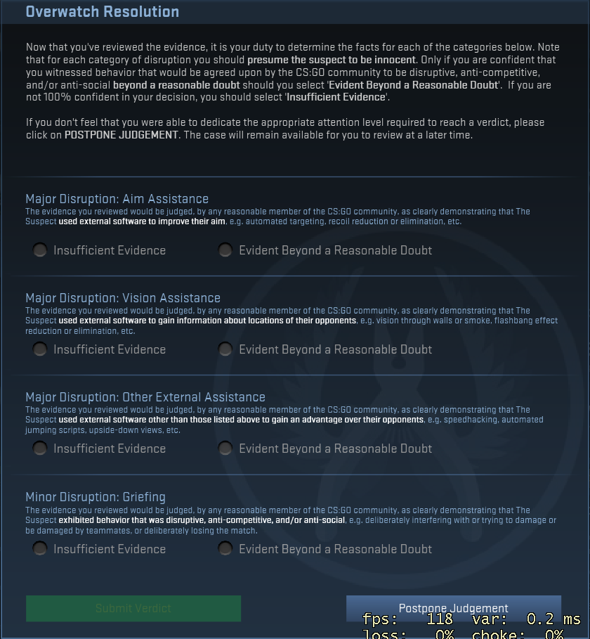

Since the beginning of Counter Strike in 1999 cheating was a problem that stayed to this day.
The first mentions of cheating date back to 2000 when the Counter Strike was released. They consisted of “trainers” which were mod menus that gave you control over an in game commands such as god mode, unlimited ammo and so forth.
The first software cheats appeared in game before 2001, the recorded mention about cheats can be traced back to September of 2001.types of cheats consisted of aimbot, and wallhacks.
The cheats were so prevalent you even couldn`t escape them in professional tournaments. And thanks to growing popularity of CS:GO most of the cheaters from CS 1.6 came to CS:GO. Even the fact of losing an in game inventory did not scare cheaters, but many Counter Strike players knew that VAC was not very effective at banning players swiftly, however the anti-cheat was updated frequently and with help of Overwatch system it became more consistent. The consequence of this are banned accounts and with them locked in game inventory, that can never be accessed by the banned account, which also means that players banned by VAC can not sell their inventory items on Steam Market.
In future, Valve will release VAC-NET a deep learning solution that will identify cheater in real time. However Valve did not revealed any details regarding this topic, but the future of Counter Strike looks bright despite few stumbles along the way.
